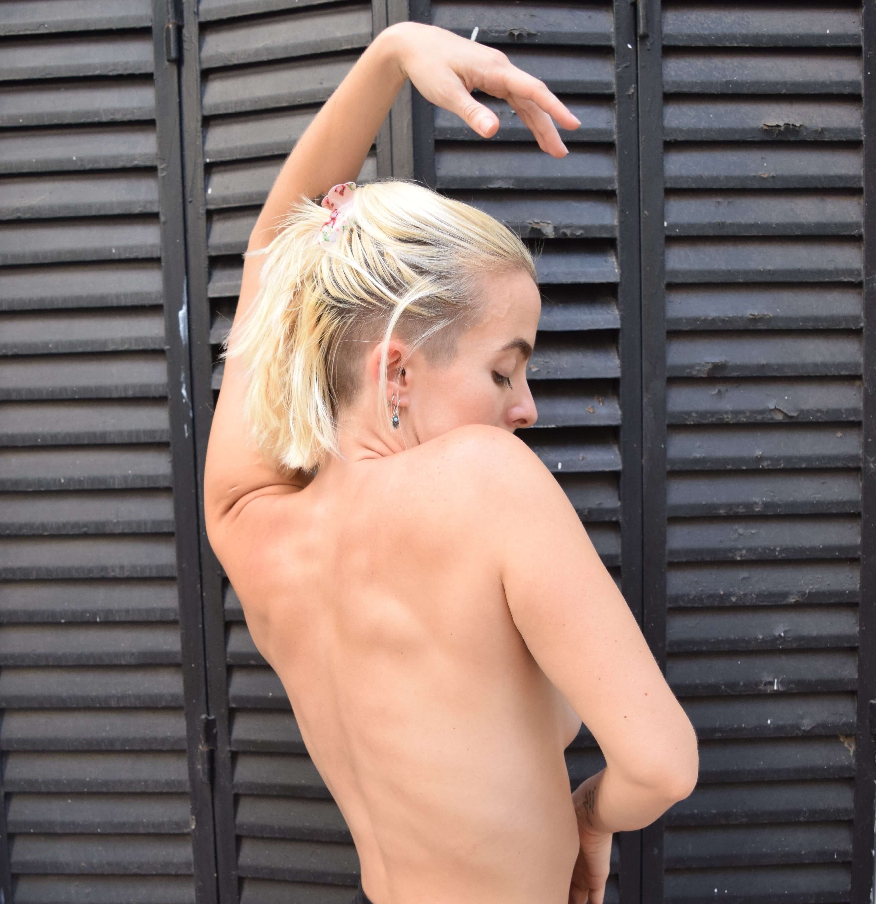

Le yoga est une ancienne philosophie née en Inde qui recherche l'harmonie entre le corps (Asanas), la respiration (Pranayama) et l'esprit (Méditation). Comme toute philosophie, il y a différentes façons de de l'interpréter et de l'exécuter. Je choisis de repenser et de reformuler certains vieux mandats qu'il apporte avec lui et de profiter les merveilleux outils de connaissance de soi qu'il nous donne.
Pilates
En Pilates, l'harmonie de notre corps est une priorité avant tout, nous cherchons à entraîner les
différentes chaînes musculaires, en respectant notre propre anatomie, évitant ainsi les blessures et
des tensions inutiles. Force, souplesse, coordination et respiration sont les axes de cette technique.
Joseph Pilates, l'a créé au début du vingtième siècle, pendant la Seconde Guerre mondiale, dans la
chambre d'un
hôpital pour répondre à la nécessité de se réhabiliter et de réhabiliter ses compagnons.

Les cours d'entraînement sont destinés à ceux qui veulent augmenter leurs performances physiques globales. Nous travaillons en aérobie et en anaérobie, en passant par les principales chaînes musculaires du corps. Dans les cours nous ne laissons jamais de côté la santé physique, c'est pourquoi dans ces cours nous recherchons et le bon équilibre entre l'augmentation constante de la puissance sans perdre de vue l'état général du corps.
Entraînement
Danse
La danse est pour moi une façon de me bouger dans la vie, tout est dansable, dans tout je trouve de la danse, des petits mouvements quotidiens aux grandes chorégraphies. La danse est sans doute ma plus grande bonheur et passion. C'est pourquoi, dans mes cours, ce qui m'intéresse le plus est d'accompagner le processus de chaque élève vers la connexion avec sa propre danse, pour trouver les différents rythmes qui nous habitent, les formes infinies que peut prendre notre corps. Et surtout le plaisir, la joie, le feu intérieur que la danse allume.
